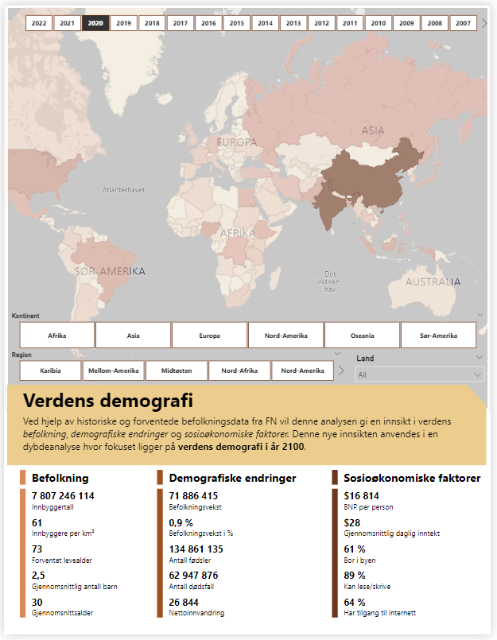
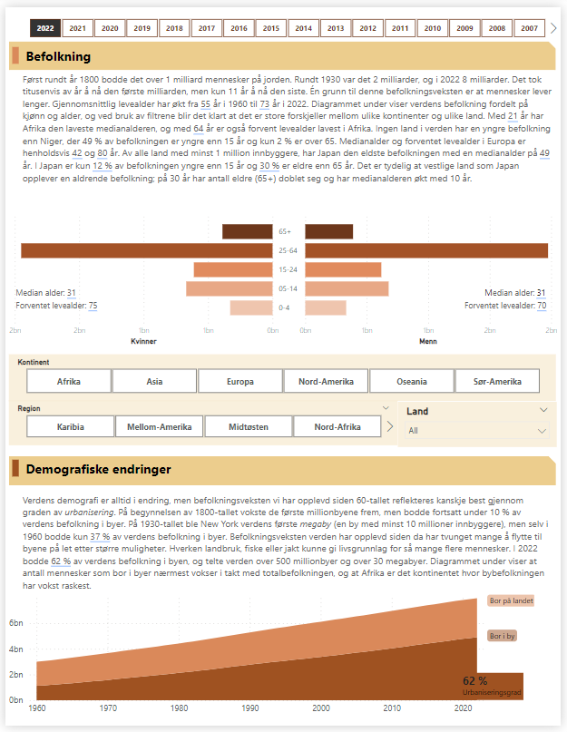
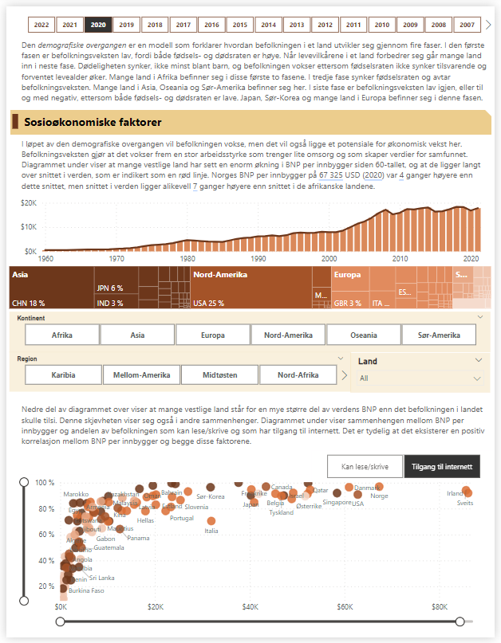
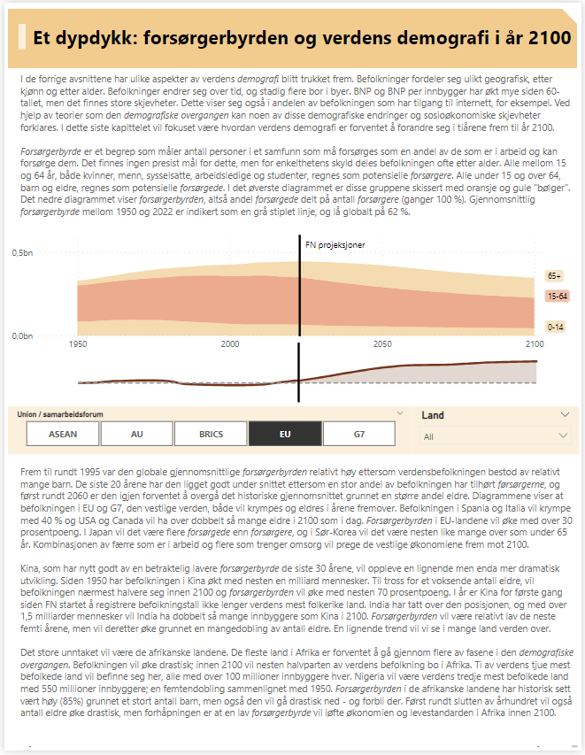

Prosjekt: Verdens demografi
Introduksjon
I denne 4-siders rapporten analyserer jeg befolkningsdata fra FN. I tillegg tar jeg i bruk data fra Our World in Data og The World Bank. I de første avsnittene ligger fokuset på befolkning, demografiske endringer og sosioøkonomiske faktorer. Ved hjelp av denne nye innsikten og forventede befolkningstall fra FN er fokuset i dybdeanalysen hvordan verdens demografi vil utvikle seg frem mot år 2100. Trykk på én av sidene for å få tilgang til rapporten.
Befolkning
Fokuset i dette avsnittet er hvordan verdens demografi har utviklet seg til å se ut slik den gjør i dag. Det viser seg at det finnes store forskjeller mellom befolkninger i ulike land når det gjelder medianalder og forventet levealder.
Demografiske endringer
I dette avsnittet ser jeg nærmere på den befolkningsveksten verden har sett de siste 60 årene. Denne veksten er spesielt tydelig gjennom andelen av befolkningen som bor i byen: befolkningen i byene har nærmest vokst i takt med verdensbefolkningen som helhet.
Sosioøkonomiske faktorer
Sosioøkonomiske faktorer er faktorer som har både med sosiale og økonomiske forhold å gjøre. I dette avsnittet ser jeg på flere slike
faktorer, som for eksempel BNP per innbygger, og hvordan de også kan påvirke hverandre.



Dybdeanalyse
I denne seksjonen har jeg analysert hvordan verdens demografi vil utvikle seg frem mot året 2100. Et begrep jeg har brukt i denne sammenhengen er forsørgerbyrde. Forsørgerbyrden i et samfunn er forholdet mellom de som potensielt er i arbeid, og de som potensielt må forsørges. En høy forsørgerbyrde betyr at det er mange som potensielt må forsørges i et samfunn, og få som kan være med å forsørge dem. Dette vil selvsagt ha stor påvirkning på ulike sosiale og økonomiske forhold. Ved å se hvordan forsørgerbyrden i et samfunn er forventet å utvikle seg, vil man også få et innblikk i hvordan samfunnet vil utvikle seg som en konsekvens av det. Ved å bruke filtrene ser vi at både befolkningen og forsørgerbyrden er forventet å utvikle seg ganske forskjellig i ulike land og ulike verdensdeler.
Kilder
- Demografiske befolkningstall og indikatorer (FN, 2023)
- Befolkning fordelt etter alder (Our World in Data, 2022)
- Tilgang til internett (Our World in Data, 2020)
- Tilgang til helsehjelp (Our World in Data, 2020)
- Leseferdigheter (The World Bank, 2022)
- BNP (The World Bank, 2021)
- Inntekt (The World Bank, 2022)
- Urbaniseringsgrad (The World Bank, 2022)